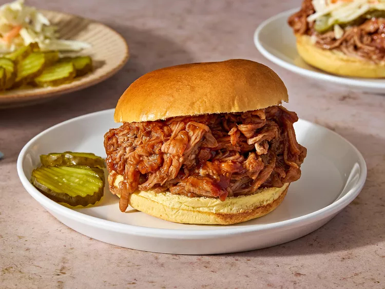

Slow Cooker Pulled Pork

Description
Root beer and pulled pork might not seem like a likely pairing but here it makes all the difference. Topped with your favorite BBQ sauce, it's sure to bring rave reviews.
Ingredients
- 1 (2 pound) pork tenderloin
- 1 (12 fluid ounce) can or bottle root beer
- 1 (18 ounce) bottle your favorite barbecue sauce
- 8 hamburger buns, split and lightly toasted